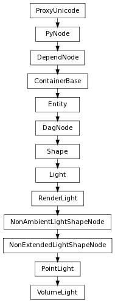

Retrieves the value of the “arc” attribute. The arc is an angular slice of the light about the y axis. The value can range from 0 to 360 degrees.
| Return type: | float |
|---|
Derived from api method maya.OpenMaya.MFnVolumeLight.arc
Retrieves the value of the “coneEndRadius” attribute. The coneEndRadius attribute determines the relative size of the one end of the cone. At a value of 1.0 it is a cylinder, while at 0 it is a cone.
| Return type: | float |
|---|
Derived from api method maya.OpenMaya.MFnVolumeLight.coneEndRadius
Retrieves the value of the “emitAmbient” attribute.
| Return type: | bool |
|---|
Derived from api method maya.OpenMaya.MFnVolumeLight.emitAmbient
Retrieves the “lightShape” attribute of the light. The shape can be one of the following.
| Return type: | VolumeLight.MLightShape |
|---|
Derived from api method maya.OpenMaya.MFnVolumeLight.lightShape
Retrieves the value of the “shadowAngle” attribute of a volume light node. This attribute represents an angular divergence from the direction vector of the light used to calculate soft shadows. It’s enabled only if the volume light direction is kDownAxis.
| Return type: | float |
|---|
Derived from api method maya.OpenMaya.MFnVolumeLight.shadowAngle
Retrieves the value of the “volumeLightDirection” attribute.
| Return type: | VolumeLight.MLightDirection |
|---|
Derived from api method maya.OpenMaya.MFnVolumeLight.volumeLightDirection
Sets the value of the “arc” attribute of a volume light node.
| Parameters : |
|
|---|
Derived from api method maya.OpenMaya.MFnVolumeLight.setArc
Sets the value of the “coneEndRadius” attribute of a volume light node.
| Parameters : |
|
|---|
Derived from api method maya.OpenMaya.MFnVolumeLight.setConeEndRadius
Sets the value of the “emitAmbient” attribute of a volume light node.
| Parameters : |
|
|---|
Derived from api method maya.OpenMaya.MFnVolumeLight.setEmitAmbient
Sets the value of the “lightShape” attribute of a volume light node. The shape can be one of the following:
| Parameters : |
|
|---|
Derived from api method maya.OpenMaya.MFnVolumeLight.setLightShape
Sets the value of the “shadowAngle” attribute of a volume light node. It’s enabled only if the volume light direction is kDownAxis.
| Parameters : |
|
|---|
Derived from api method maya.OpenMaya.MFnVolumeLight.setShadowAngle
Sets the value of the “volumeLightDirection” attribute of a volume light node. The shape can be one of the following.
| Parameters : |
|
|---|
Derived from api method maya.OpenMaya.MFnVolumeLight.setVolumeLightDirection